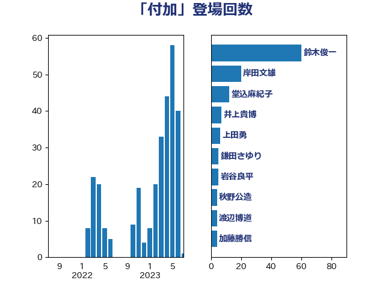

単語「付加」

| 鈴木俊一 | 自由民主党 | 60 回 |
| 岸田文雄 | 自由民主党 | 20 回 |
| 堂込麻紀子 | 無所属 | 12 回 |
| 井上貴博 | 自由民主党 | 7 回 |
| 上田勇 | 公明党 | 6 回 |
| 鎌田さゆり | 立憲民主党 | 5 回 |
| 岩谷良平 | 日本維新の会 | 5 回 |
| 秋野公造 | 公明党 | 4 回 |
| 渡辺博道 | 自由民主党 | 4 回 |
| 加藤勝信 | 自由民主党 | 4 回 |
| 住吉寛紀 | 日本維新の会 | 4 回 |
| 金子俊平 | 自由民主党 | 3 回 |
| 石垣のりこ | 立憲民主党 | 3 回 |
| 田村まみ | 国民民主党 | 3 回 |
| 浜地雅一 | 公明党 | 3 回 |
| 柴愼一 | 立憲民主党 | 3 回 |
| 岬麻紀 | 日本維新の会 | 3 回 |
| 奥野総一郎 | 立憲民主党 | 3 回 |
| 吉田統彦 | 立憲民主党 | 3 回 |
| 中司宏 | 日本維新の会 | 3 回 |
| 青柳陽一郎 | 立憲民主党 | 2 回 |
| 階猛 | 立憲民主党 | 2 回 |
| 金子恭之 | 自由民主党 | 2 回 |
| 野田佳彦 | 立憲民主党 | 2 回 |
| 石井拓 | 自由民主党 | 2 回 |
| 田野瀬太道 | 無所属 | 2 回 |
| 浅野哲 | 国民民主党 | 2 回 |
| 河西宏一 | 公明党 | 2 回 |
| 横沢高徳 | 立憲民主党 | 2 回 |
| 後藤茂之 | 自由民主党 | 2 回 |
| 小林鷹之 | 自由民主党 | 2 回 |
| 大塚耕平 | 国民民主党 | 2 回 |
| 城井崇 | 立憲民主党 | 2 回 |
| 北村経夫 | 自由民主党 | 2 回 |
| 高橋千鶴子 | 日本共産党 | 1 回 |
| 音喜多駿 | 日本維新の会 | 1 回 |
| 長島昭久 | 自由民主党 | 1 回 |
| 長友慎治 | 国民民主党 | 1 回 |
| 鈴木義弘 | 国民民主党 | 1 回 |
| 金城泰邦 | 公明党 | 1 回 |
| 藤岡隆雄 | 立憲民主党 | 1 回 |
| 石原正敬 | 自由民主党 | 1 回 |
| 石井正弘 | 自由民主党 | 1 回 |
| 石井啓一 | 公明党 | 1 回 |
| 田嶋要 | 立憲民主党 | 1 回 |
| 田中昌史 | 自由民主党 | 1 回 |
| 田中健 | 国民民主党 | 1 回 |
| 玉木雄一郎 | 国民民主党 | 1 回 |
| 猪瀬直樹 | 日本維新の会 | 1 回 |
| 源馬謙太郎 | 立憲民主党 | 1 回 |
| 浜田靖一 | 自由民主党 | 1 回 |
| 沢田良 | 日本維新の会 | 1 回 |
| 水野素子 | 立憲民主党 | 1 回 |
| 梅村聡 | 日本維新の会 | 1 回 |
| 末松信介 | 自由民主党 | 1 回 |
| 木村次郎 | 自由民主党 | 1 回 |
| 新藤義孝 | 自由民主党 | 1 回 |
| 斉藤鉄夫 | 公明党 | 1 回 |
| 広瀬めぐみ | 自由民主党 | 1 回 |
| 川田龍平 | 立憲民主党 | 1 回 |
| 岡本あき子 | 立憲民主党 | 1 回 |
| 山岸一生 | 立憲民主党 | 1 回 |
| 小野泰輔 | 日本維新の会 | 1 回 |
| 小西洋之 | 立憲民主党 | 1 回 |
| 安江伸夫 | 公明党 | 1 回 |
| 大家敏志 | 自由民主党 | 1 回 |
| 塩崎彰久 | 自由民主党 | 1 回 |
| 國重徹 | 公明党 | 1 回 |
| 和田有一朗 | 日本維新の会 | 1 回 |
| 吉田宣弘 | 公明党 | 1 回 |
| 北神圭朗 | 無所属 | 1 回 |
| 北側一雄 | 公明党 | 1 回 |
| 勝部賢志 | 立憲民主党 | 1 回 |
| 前原誠司 | 国民民主党 | 1 回 |
| 佐藤啓 | 自由民主党 | 1 回 |
| 中川正春 | 立憲民主党 | 1 回 |
| 三浦信祐 | 公明党 | 1 回 |